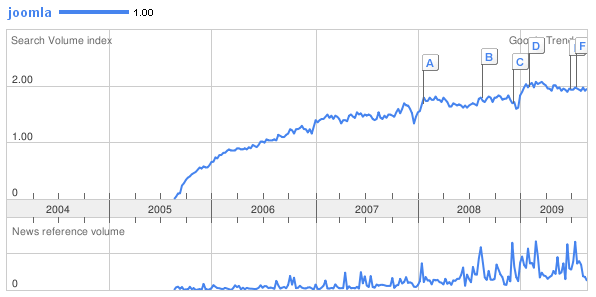
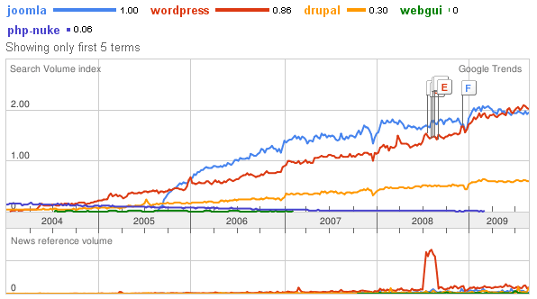

Joomla!
...è sulla bocca di tutti.
Da molti anni sviluppiamo nuovi siti web utilizzando le più disparate soluzioni software, in base ai requisiti che il progetto richiede cerchiamo sempre di utilizzare la tecnologia e gli strumenti giusti. Certo non tutti i progetti hanno specificità particolari tali da richiedere lo sviluppo di applicazioni verticali sviluppate ad hoc per il cliente. Il più delle volte le richieste sono comuni come la gestione di aree news, di vetrine di prodotti o di mailing list, tutte richieste che possono essere rispettate con l'utilizzo di un CMS(Content Management System) già presente sul mercato (ovviamente opensource, diffuso e ben supportato dalla community). Da alcuni anni abbiamo scelto come "base" per i nostri progetti web Joomla, un sistema di gestione dei contenuti flessibile e potente.Stiamo comunque continuando lo studio dei CMS concorrenti più blasonati come Drupal oDotNetNuke per non parlare di Wordpress ma ci sentiamo di dire che la nostra scelta non ci ha mai limitato ne fatto rimpiangere i concorrenti. I punti di forza di Joomla sono sicuramente la facilità di utilizzo, la community sempre attenta e veloce nel rispondere alle richieste del forum e l'immensa raccolta di estensioni sviluppate da terzi.
In particolare le estensioni software sono così numerose e variegate che si può veramente trovare di tutto (o quasi) permettendo allo sviluppatore di partire con una base di codice già consolidato. Il tu
tto significa per il cliente un costo contenuto e una qualità molto alta. Dalla parte dello sviluppatore inoltre l'SDK fornito dalla versione 1.5 del CMS risulta ben strutturato, di facile comprensione e molto potente, lo sviluppo di nuove applicazioni parte da una base solida che supporta ogni tipo di operazione. In pratica chi sviluppa si trova tutto quello che serve già pronto all'utilizzo senza dover creare o lavorare ad un livello di astrazione molto basso e tutto ciò si traduce in tempi di sviluppo ridotti, costi ridotti ed una più altà qualità del software prodotto.
Senza continuare con un elenco dettagliato di tutti i vantaggi di Joomla passiamo subito ad un particolare e curioso aspetto che riguarda la continua battaglia tra i CMS presenti in rete. Come sappiamo Google è l'indiscusso re tra i motori di ricerca presenti in rete ed offre un numero così elevato di servizi  da far impallidire qualsiasi software house, in particolare da un pò di tempo Google ha lanciato Google Trends, uno strumento (ancora contenuto nel gruppo di applicazioni Labs e quindi ancora in fase di sviluppo) capace di visualizzare l'andamento e la frequenza di utilizzo di particolari parole chiavi nel proprio motore di ricerca. In pratica raccoglie e conta tutte le parole ricercate dai singoli utenti attraverso il motore di ricerca Google e ce le mostra attraverso dei grafici per capirne l'andamento temporale. Per esempio se inseriamo "Joomla" all'interno di Google Trends ci verrà visualizzato un grafico di questo tipo:
da far impallidire qualsiasi software house, in particolare da un pò di tempo Google ha lanciato Google Trends, uno strumento (ancora contenuto nel gruppo di applicazioni Labs e quindi ancora in fase di sviluppo) capace di visualizzare l'andamento e la frequenza di utilizzo di particolari parole chiavi nel proprio motore di ricerca. In pratica raccoglie e conta tutte le parole ricercate dai singoli utenti attraverso il motore di ricerca Google e ce le mostra attraverso dei grafici per capirne l'andamento temporale. Per esempio se inseriamo "Joomla" all'interno di Google Trends ci verrà visualizzato un grafico di questo tipo:
da far impallidire qualsiasi software house, in particolare da un pò di tempo Google ha lanciato Google Trends, uno strumento (ancora contenuto nel gruppo di applicazioni Labs e quindi ancora in fase di sviluppo) capace di visualizzare l'andamento e la frequenza di utilizzo di particolari parole chiavi nel proprio motore di ricerca. In pratica raccoglie e conta tutte le parole ricercate dai singoli utenti attraverso il motore di ricerca Google e ce le mostra attraverso dei grafici per capirne l'andamento temporale. Per esempio se inseriamo "Joomla" all'interno di Google Trends ci verrà visualizzato un grafico di questo tipo:
in pratica sempre più persone cercano tale parola con il passare dei mesi. La cosa si fa molto più interessante se confrontiamo Joomla con gli altri CMS:

Quello che ne viene fuori è chiaro, Joomla e Wordpress rimangono i sistemi preferiti e maggiormente ricercati dagli utenti in rete, considerando poi che Wordpress viene utilizzato prevalentemente per la gestione di soli blog diventa chiara la supremazia di Joomla su tutti gli altri. Certo molti potranno obiettare che il numero di ricerche non è direttamente correlato con la qualità e le funzionalità offerte dai CMS ma l'interesse da parte di molti non fa altro che aumentare il numero di sviluppatori e di estensioni scritte per questo sistema accrescendone quindi il valore. Inoltre un numero molto elevato di utilizzatori spingerà il team di sviluppo a migliorare continuamente il supporto e le caratteristiche del prodotto. In pratica tutto ciò non farà altro che aumentare ancora una volta l'interesse degli utenti verso questo sistema innescando quindi una spirale molto positiva e proficua per Joomla e per i sui utilizzatori.